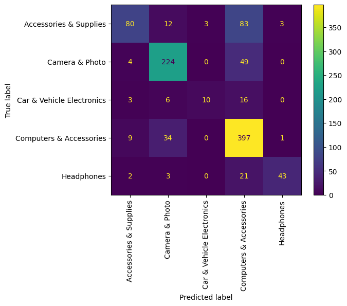

Overview
Naive Bayes is a type of supervised machine learning algorithm that calculates the probaility that a data point belongs to a particular class. Because features can belong to various different distributions based on their data type or nature (nominal, ordinal or continuous), naive bayes utilizes different distributions for estimating probabilities. We therefore have different types of naive bayes classifiers like categorical naive bayes, binomial, multinomial naive bayes and gaussian naive bayes. Each of these variations utilizes the corresponding probability distribution to model the probabilities of data points.
Naive bayes classifier works by utilizing the training dataset to estimate parameters required to define the corresponding probability distribution. These estimated parameters are utilized to predict the probabilities of new point for each class and the class with the maximum probability is predicted by naive bayes for the new point. Naive bayes is called naive because it assumes independence in features. That is, the probability for a data point in a class $P(X/c)$ is directly computed as a product of probabilities of individual features $\left(P(f_1/c) \times P(f_2/c) \times ... \times P(f_p/c)\right)$.

Multinomial naive bayes is used for data that contains counts of occurrences of features. For example, a text document can be represented as the counts of each word in the document. Multinomial naive bayes estimates the probability of each feature, or word, in a class and uses this probability to compute the probability of a feature vector belonging to the class.
$$P(\text{feature}_i/class = c) = \frac{\text{Number of times feature_i appears in class c}}{\text{Sum of all occurrences of features in class c}}$$ The probability for a new vector $X$, of features counts, belonging to class c is then given by $$P(\text{class = c / X}) = \prod_{i=1}^p P(\text{feature}_i/class = c)^{x_i} \times \frac{P(c)}{P(X)}$$ where $p$ is the number of features and $x_i$ is the count of $\text{feature}_i$.
Since $P(X)$ is the same for all classes, we do not need to compute the value to compare its probabilities across classes to find the most probable class.
Bernoulli naive bayes is a very similar classifier where the features can only have 2 values, either True or False. Therefore, the value of each feature represents whether the feature is present or not. In this case, the probability of each fature in a class is just the number of times it appears in the class divided by the total number of times the class appears in the dataset. These probabilities for each features are then used to compute the joint probability of a point in the class, which can then be used to compute the probability of the point belonging to the class by utilizing the Bayes Theorem.
$$P(\text{feature_i/class = c}) = \frac{\text{Number of times feature_i appears in class c (n_{i,c})}}{\text{Number of times class c appears in the dataset(N_c)}}$$ $$P(\text{class = c / X}) = \prod_{i=1}^p \left(P(\text{feature}_i/class = c)^{x_i} \times [1 - P(\text{feature}_i/class = c)^{1 - x_i}]\right) \times \frac{P(c)}{P(X)}$$ where $p$ is the number of features and $x_i$ is $1$ if $\text{feature}_i$ is present or True and $0$ otherwise.
Again, since $P(X)$ is the same for all classes, we do not need to compute this value to compare the probabilities across classes to find the most probable class.
Data Prep and Code
The data has already been cleaned and prepared in Data Prep and Clustering parts. The data used in this part is the Count vectorized review text with product category as labels. The dataset is also filtered for removing highly improbable classes and classes with high overlaps.
Naive Bayes is a supervised learning method because to train Naive Bayes we require labelled data points to be able to compute conditional probabilities. The data that was prepared in the sections described above already has labels in the form of categories of products. We will use this to train and test the naive bayes classifier and observe how well it is able to use product reviews to identify product categories.
Shown below is a sample of the dataset used for this part.
Supervised learning methods are used to build models that can make predictions on unseen data. To ensure that these models are able to generalize well and avoid overfitting on the training data, it is essential to split the data into a training set and a testing set. The training set is used to build the model, while the testing set is used to evaluate how well the model performs on new, unseen data. This is important because the data used for training may not be a perfect representation of the population, and so the model may not perform as well on new data. By using a disjoint training and testing set, we can simulate how the model might perform in the real world and account for any bias or overfitting in the model. This is an essential step in developing accurate and reliable machine learning models that can make predictions with high accuracy.
To create traingin and testing set, the function train_test_split from the sklearn package was used with test_size = 0.2. Below are two images, showing a sample of the data that was split into training and testing sets.
Link to sample data file and code:
- Data file: https://github.com/anup44/machine_learning_project/blob/main/tokens_count_vectorized_sample.csv
- Naive Bayes Code: https://github.com/anup44/machine_learning_project/blob/main/naive_bayes.ipynb
Code
import pandas as pd
import pandas as pd
import numpy as np
import spacy
import matplotlib.pyplot as plt
from matplotlib import rcParams
from sklearn.feature_extraction.text import CountVectorizer, TfidfVectorizer
from sklearn.model_selection import train_test_split
from sklearn.metrics import confusion_matrix, accuracy_score, ConfusionMatrixDisplay, classification_report
from sklearn.naive_bayes import MultinomialNB
%matplotlib inline
import random
meta_df_1000 = pd.read_parquet('meta_df_1000_cleaned.parquet')
reviews_df = pd.read_parquet('reviews_df_clean.parquet')
merged_df = pd.merge(meta_df_1000, reviews_df, on='asin', how='inner')
merged_df['category_1'] = merged_df.category.apply(lambda x: x[1])
merged_df['rating'] = merged_df['rating'].astype(float)
merged_df.head()
merged_df.info()
merged_df = merged_df[merged_df['category_1']\
.isin(['Computers & Accessories', 'Camera & Photo',
'Accessories & Supplies', 'Headphones', 'Car & Vehicle Electronics'])]
merged_df['category_1'].value_counts()
nlp = spacy.load('en_core_web_sm')
merged_df['tokens'] = merged_df['content'].apply(lambda x: nlp(x.lower()))
merged_df.tokens
merged_df['tokens'] = merged_df.tokens.apply(lambda x: [w.lemma_ for w in x if not w.is_stop and not w.is_punct and w.lemma_!=' '])
merged_df['tokens'] = merged_df['tokens'].apply(lambda x: ' '.join(x))
merged_df['tokens'].head(10)
vectorizer = CountVectorizer(max_df=0.7)
tokens_vectorized = vectorizer.fit_transform(merged_df['tokens'])
tokens_vectorized
tokens_vectorized.shape
X_train, X_test, y_train, y_test = train_test_split(tokens_vectorized, merged_df['category_1'], test_size=0.2)
X_train.shape, X_test.shape, y_train.shape, y_test.shape
nb_clf = MultinomialNB()
nb_clf.fit(X_train, y_train)
y_pred = nb_clf.predict(X_test)
print("Classes", nb_clf.classes_)
print("Class Counts", nb_clf.class_count_)
print("Log of Class Priors", nb_clf.class_log_prior_)
print("Counts for each (class, feature)", nb_clf.feature_count_)
print("Log of feature probabilities for each class", nb_clf.feature_log_prob_)
ConfusionMatrixDisplay(confusion_matrix=confusion_matrix(y_test, y_pred), display_labels=nb_clf.classes_).plot()
plt.xticks(rotation=90)
plt.show()
print ("acc",accuracy_score(y_test, y_pred))
print (classification_report(y_test, y_pred))Results
This section shows the results of the Multinomial Naive Bayes classifier on the dataset described above. We use the Multinomial Naive Bayes because our dataset contains the counts of words in document as our input features.
Below are some attributes of the trained Multinomial Naive Bayes model that are computed using the trained data. These attributes are utilized to estimate the probabilities of classes and make predicitons as described in the Overview section of the page.
Classes ['Accessories & Supplies' 'Camera & Photo' 'Car & Vehicle Electronics'
'Computers & Accessories' 'Headphones']
Class Counts [ 720. 1136. 224. 1656. 276.]
Log of Class Priors [-1.71779394 -1.26177655 -2.8853991 -0.88488481 -2.67664428]
Counts for each (class, feature) [[ 5. 8. 0. ... 0. 1. 1.]
[ 6. 9. 0. ... 0. 0. 0.]
[ 0. 0. 0. ... 0. 0. 0.]
[14. 4. 1. ... 1. 0. 0.]
[ 5. 0. 0. ... 0. 0. 0.]]
Log of feature probabilities for each class (class, feature)
[[ -8.80374963 -8.39828452 -10.5955091 ... -10.5955091 -9.90236192
-9.90236192]
[ -9.05201432 -8.69533938 -10.99792447 ... -10.99792447 -10.99792447
-10.99792447]
[ -9.93319198 -9.93319198 -9.93319198 ... -9.93319198 -9.93319198
-9.93319198]
[ -8.65213193 -9.75074422 -10.66703495 ... -10.66703495 -11.36018213
-11.36018213]
[ -8.29563172 -10.08739119 -10.08739119 ... -10.08739119 -10.08739119
-10.08739119]]The confusion matrix for the predicted classes for the model on the test data is shown below.
The accuraracy and classification report for the model on test data are shown below.
accuracy: 0.7517447657028913
precision recall f1-score support
Accessories & Supplies 0.82 0.44 0.57 181
Camera & Photo 0.80 0.81 0.81 277
Car & Vehicle Electronics 0.77 0.29 0.42 35
Computers & Accessories 0.70 0.90 0.79 441
Headphones 0.91 0.62 0.74 69
accuracy 0.75 1003
macro avg 0.80 0.61 0.67 1003
weighted avg 0.77 0.75 0.74 1003
The results show that the accuracy is 75.17% with acceptable performance (precision, recall) on all classes, including the minority classes. The class with the worst performance is Car & Vehicle Electronics as we can see in the confusion matrix that a large number of these points are predicted in other clases. Accessories & Supplies also has one on the lowest performance as half of the elements are predicted into the class Computers & Accessories. This may be due to an overlap of words being used in the reviews for Accessories & Supplies and Computers & Accessories categories.
Conclusion
On observing these results and comparing them with results from decision trees, we can say that Multinomial Naive Bayes has good classification performance for Count vectorized document data. This may be attributed to the fact the the assumption of independence holds true to some extend in such datasets, although there is correlations between the occurence of certain word combinations.
Another advantage of using Naive Bayes is that it accounts for the sizes of classes in the dataset while computing class probabilities and is not severely affected by under-represented classes its predictive performance in tha way that decision trees are. This is because naive bayes works with ptobabilities that are individually computed for each class and setting uniform class priors (setting fit_prior=False) can remove most effects of class being underrepresented.
One limitation of naive bayes is that naive. That is, it assumes independence of features which fails quite easily in any real scenario. Naive bayes can therefore quickly start to give wrong class probabilities and have a poor performance where this assumption does not hold.
In conclusion, this report aimed to explore the effectiveness of using a Naive Bayes classifier for classifying product categories based on Amazon reviews data. The results obtained from our experiments indicate that the Naive Bayes classifier is a useful tool for this purpose. By using the count frequencies of words in the review text as input features for the classifier, an accuracy of 75.17% was achieved for classifying product categories. This indicates that the classifier is able to accurately distinguish between different product categories based on the review text.
A potential limitation of the approach is that it relies solely on the words used in the review text, and does not take into account other factors such as the reviewer's tone, the context in which the review was written, or the presence of sarcasm or irony. The findings suggest that the Naive Bayes classifier is a promising approach for classifying product categories based on Amazon reviews data. It has the potential to be a valuable tool for e-commerce companies looking to analyze customer feedback and improve their product offerings.